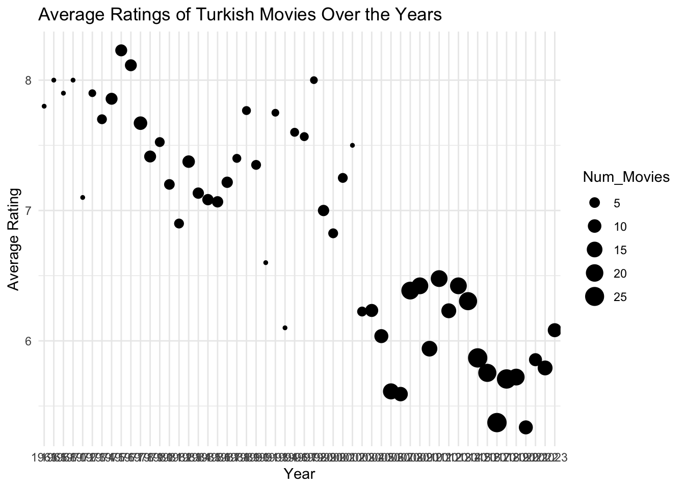
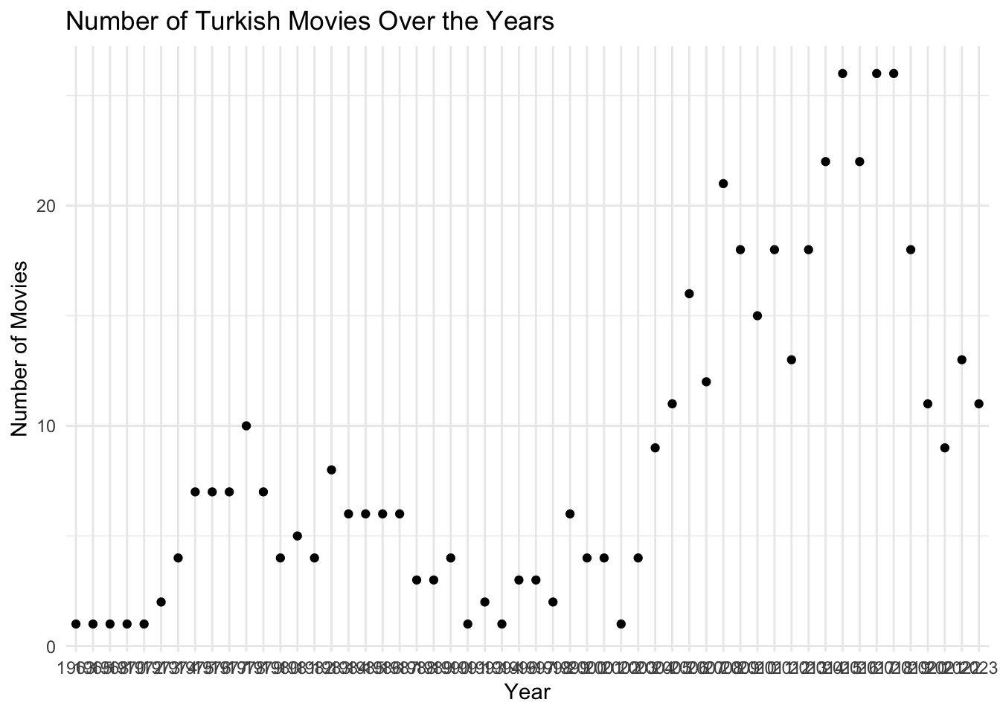
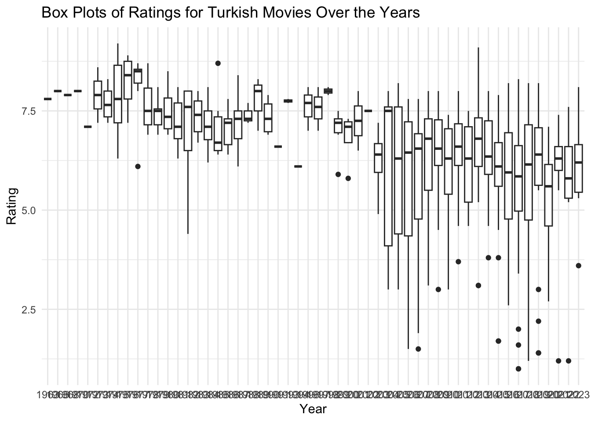
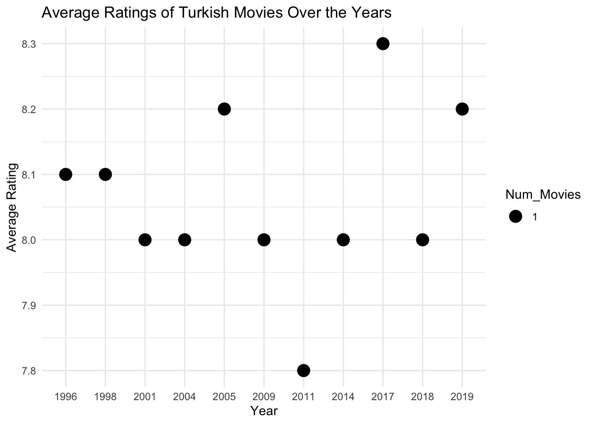

movies <- movies %>%arrange(desc(Rating))top_5_movies <-head(movies, 5)bottom_5_movies <-tail(movies, 5)(kable(top_5_movies, caption ="Top 5 Movies based on User Ratings"))
Top 5 Movies based on User Ratings
Title
Year
Duration
Rating
Votes
Hababam Sinifi
1975
NA
9.2
42512
CM101MMXI Fundamentals
2013
NA
9.1
46996
Tosun Pasa
1976
NA
8.9
24329
Hababam Sinifi Sinifta Kaldi
1975
NA
8.9
24369
Süt Kardesler
1976
NA
8.8
20889
Show the code
(kable(bottom_5_movies, caption ="Bottom 5 Movies based on User Ratings"))
Bottom 5 Movies based on User Ratings
Title
Year
Duration
Rating
Votes
466
Cumali Ceber 2
2018
NA
1.2
10230
467
Müjde
2022
NA
1.2
9919
468
15/07 Safak Vakti
2021
NA
1.2
20608
469
Cumali Ceber: Allah Seni Alsin
2017
NA
1.0
39269
470
Reis
2017
NA
1.0
73974
Visualizations:
Turkish movies are dying over years. Somebody help.
Show the code
movies$Year <-as.factor(movies$Year)rating_averages <- movies %>%group_by(Year) %>%summarise(Avg_Rating =mean(Rating),Num_Movies =n())ggplot(rating_averages, aes(x = Year, y = Avg_Rating, size = Num_Movies)) +geom_point() +labs(title ="Average Ratings of Turkish Movies Over the Years",x ="Year",y ="Average Rating") +theme_minimal()

Show the code
ggplot(rating_averages, aes(x = Year, y = Num_Movies)) +geom_point() +labs(title ="Number of Turkish Movies Over the Years",x ="Year",y ="Number of Movies") +theme_minimal()

Show the code
ggplot(movies, aes(x = Year, y = Rating)) +geom_boxplot() +labs(title ="Box Plots of Ratings for Turkish Movies Over the Years",x ="Year",y ="Rating") +theme_minimal()

IMDB Top 100 Visualizations:
Show the code
url <-"https://m.imdb.com/search/title/?title_type=feature&num_votes=2500,&groups=top_1000&country_of_origin=TR&count=250"movies <-scrape_movie_info(url)movies$Year <-as.factor(movies$Year)rating_averages <- movies %>%group_by(Year) %>%summarise(Avg_Rating =mean(Rating),Num_Movies =n())print(ggplot(rating_averages, aes(x = Year, y = Avg_Rating, size = Num_Movies)) +geom_point() +labs(title ="Average Ratings of Turkish Movies Over the Years",x ="Year",y ="Average Rating") +theme_minimal())

Show the code
ggplot(movies, aes(x = Year, y = Rating)) +geom_boxplot() +labs(title ="Box Plots of Ratings for Turkish Movies Over the Years",x ="Year",y ="Rating") +theme_minimal()